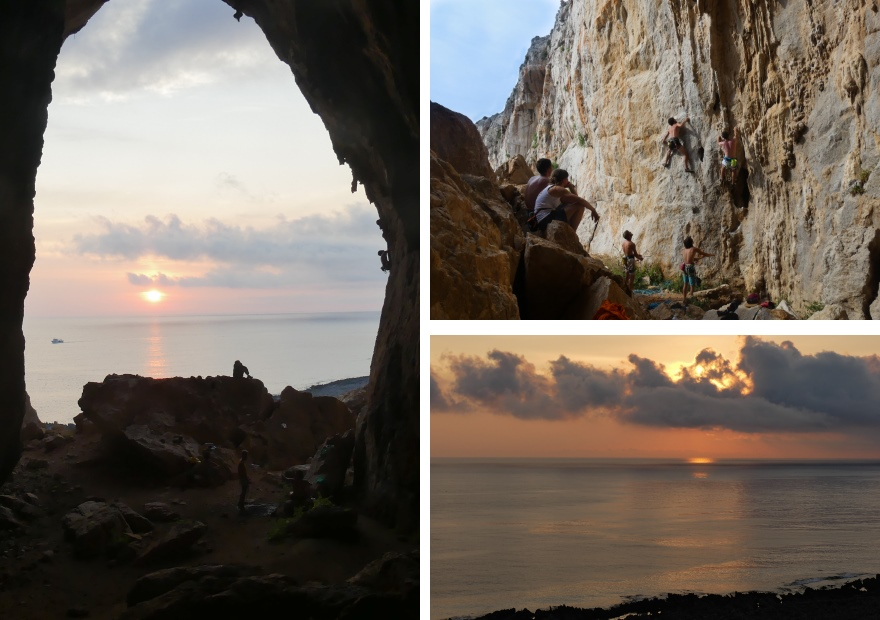

C'est au large de San Vito lo Capo que nous avons passé la majeure partie de la semaine. Il faut dire que le mouillage était plutôt (carrément) sympa, qu'il y avait plein de spots de grimpe accessibles à pied depuis la plage (il ne faut quand même pas avoir peur de faire quelques kilomètres ;)) , et que cela suffisait à notre bonheur ! Nous avons exploré deux sites de grimpe différents:
Depuis "la cathédrale", on a une vue super sympa sur la baie et la ville :) Des voies bien sympa, mais il fallait calculer quand est-ce que les façades passeraient à l'ombre ! Nous sommes allé grimper dans ce secteur deux jours différents, le premier soir sur la droite du secteur, puis en journée plus sur la gauche. Calamancina est une très longue falaise qui longe la mer sur plusieurs kilomètres. Il y a donc plein de secteurs différents là-bas, et nous avons profité de Campo Base et Grotta del Cavallo. Il y a de magnifiques tuffas, un très beau constraste avec l'escalade en salle à laquelle nous sommes quand même (encore) plus habitués !
Nous n'avons grimpé qu'un jour là bas, la veille du retour. Levé tôt le matin pour profiter de températures moins extrêmes et avoir le temps de naviguer jusqu'à Palerme ensuite ! Nous sommes allés au secteur Valdesi, encore une fois accessible à pieds depuis la plage (c'était clairement un critère de choix pour nous !) Cette session de grimpe a été marqué par l'ouvreur de nombreuses voies sur ce secteur, qui est venu se balader pendant qu'on grimpait ! Il a fait essayer à Paul sa dernière ouverture pour avoir son avis sur la cotation et m'a aidé à venir à bout d'une voie en dalle en me donnant la méthode, en pointant les prises au laser ! Souvenirs inoubliables.